DANIEL RHYOO
mechanical engineer
-
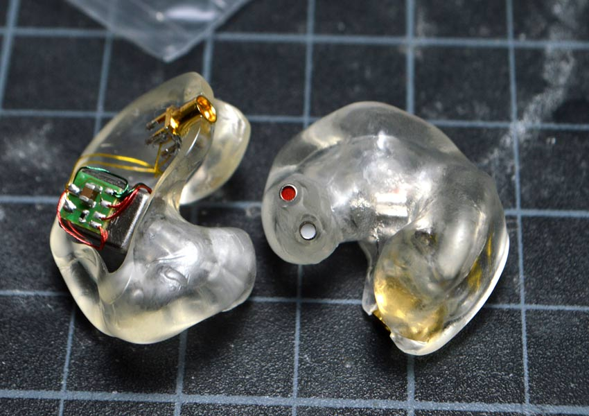
CUSTOM IEM
12-2016 : IN-PROGRESS Made a custom shaped, 2 driver IEM through 2 methods: Standard UV resin mold & 3D scanned SLA printed
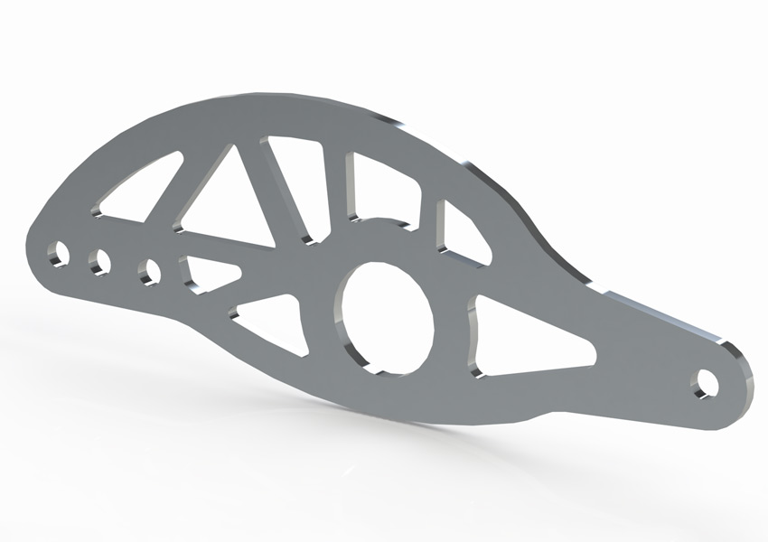TOPOLOGY OPTIMIZED BELLCRANKS
11-2016 : IN-PROGRESS Used Solidthinking Inspire to topology optimize the bellcranks on the 2016 UIUC FSAE Electric car.
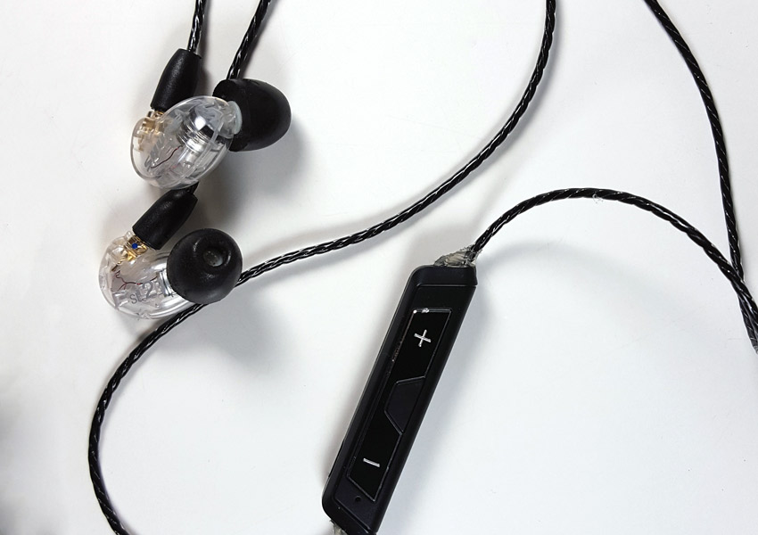WIRELESS SHURE MOD
5-2016 : FINISHED Easy and low-cost mod to make a removable bluetooth module for IEMs
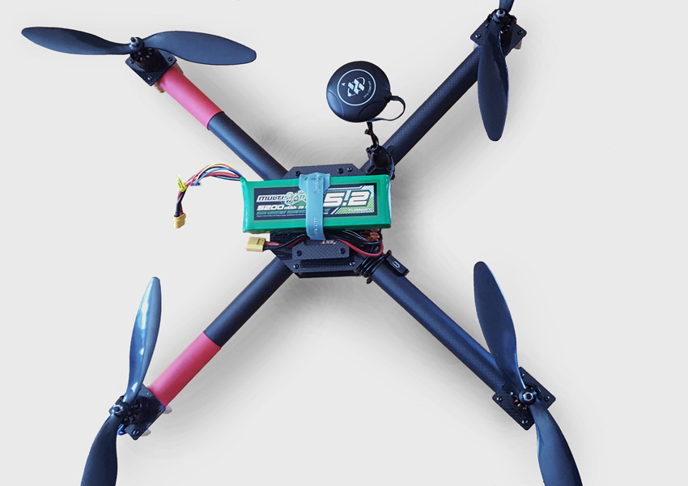CUSTOM QUADCOPTER
4-2016 : FINISHED Designed and machined a custom, carbon fiber quadcopter for a client
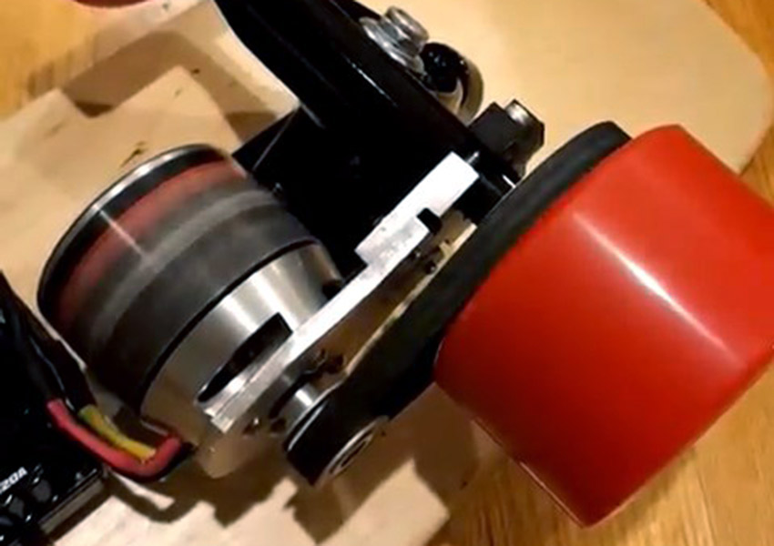ELECTRIC LONGBOARD
3-2016 : IN-PROGRESS Designed and machined an adjustable motor mount for an electric longboard
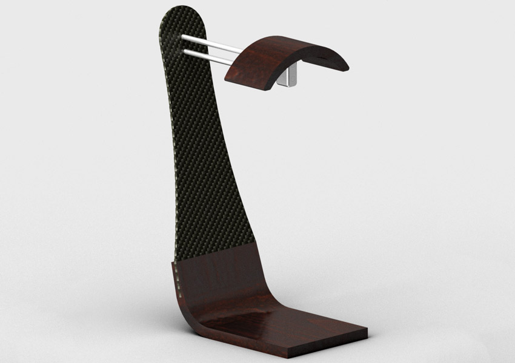HEADPHONE STAND
12-2015 : IN-PROGRESS Designed and machined a headphone stand made from carbon fiber, cocobolo, and aluminum
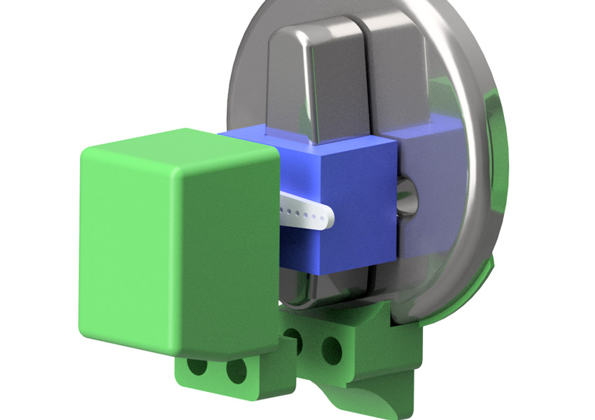WIRELESS DOOR LOCK
11-2015 : FINISHED Rapid prototyped and programmed a NFC wireless door lock
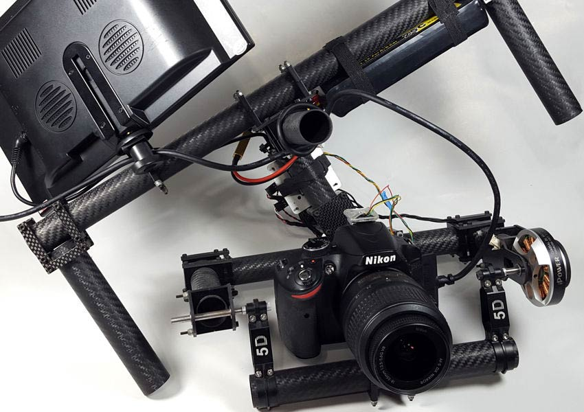 DSLR BRUSHLESS GIMBAL8-2014 : FINISHED Designed and machined a low cost carbon fiber 2-axis camera stabilizer
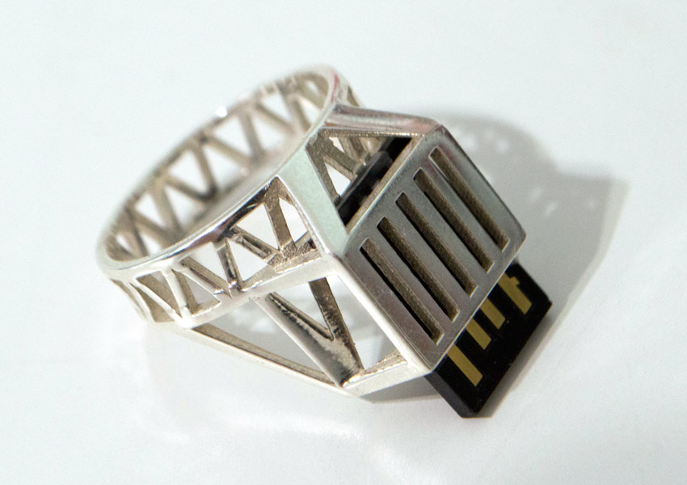DATA RING
6-2014 : FINISHED Designed a silver ring that holds a 32GB flashdrive blending art and tech
-
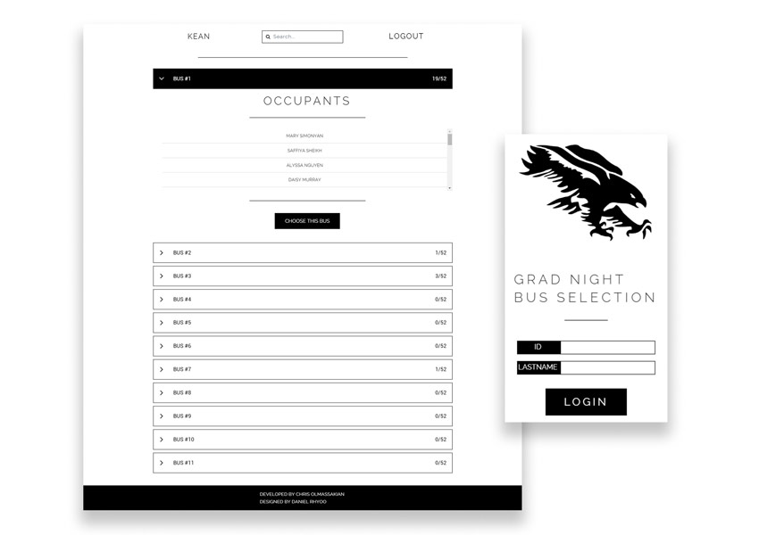
CVHS BUS WEBSITE
3-2016 : FINISHED Developed the front-end for a responsive website that allowed >500 students to login, search for friends, and select a bus
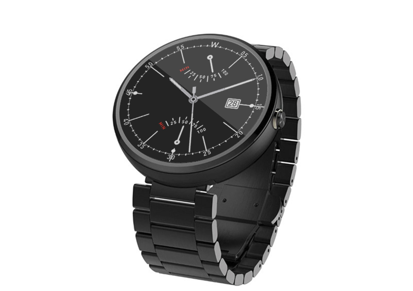ANDROID WEAR WATCHFACE
11-2015 : IN-PROGRESS Watchface for android wear based off of the Junker Automatic 6061
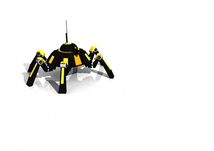SPIDER DRONE
5-2014 : FINISHED Modeled spider drone with walking animation using Autodesk Maya

WATCH MODEL
5-2014 : FINISHED Modeled watch with kitbashed center dial using Autodesk Maya